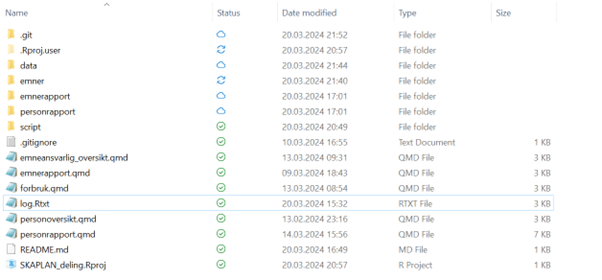
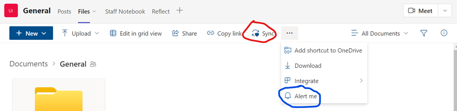
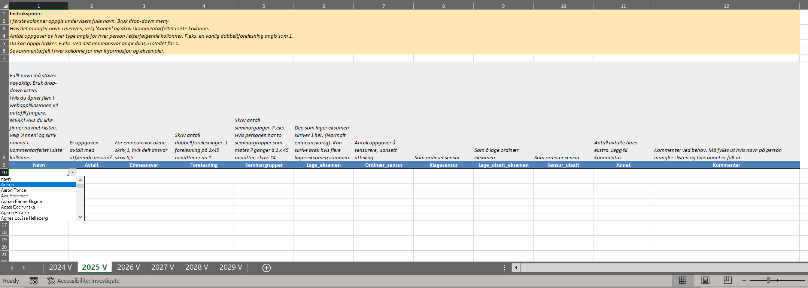

library(tidyverse)
library(lubridate)
library(openxlsx)
library(readxl)
library(stringr)
library(quarto)
library(pdftools)
library(here)
library(gtsummary)
library(gt)1 Oppsett
1.1 Oppsett og forberedelser
1.1.1 Filstruktur
Systemet er basert på følgende filstruktur i arbeidsområdet.

Her er det altså inkludert git og Rstudio-projects hvis man ønsker bruke det.
1.1.2 Filer i Teams og sync lokalt
Systemet for emneplanlegging er lagret i en delt mappe i Teams. All planlegging av enkeltemner gjøres da i denne mappen av alle involverte. Undervisningsleder, instituttleder og kontorsjef har tilgang til hele Teamsmappen, mens alle andre får tilgang via delt lenke i Sharepoint.
For å kjøre R-programmene er det en fordel om Teams-mappen er synkronisert mot lokal mappe hos den ansvarlige for oppdateringene. Da kan R åpnes med .Rprojects, som er en fordel.
- For å sync’e Teams filmappe, gå til Teams og klikk knapp som markert i rødt i bildet nedenfor
- For å be om beskjed ved endringer i filer i Teams, klikk som markert i blått i bildet nedenfor. (En gang i uken er antakeligvis mer enn nok).

All undervisning planlegges på emne-nivå slik at alle personlige undervisningsplaner er et aggregert resultat av planlegging av emner.
1.1.3 Software
Oppsettet gjøres fra R. Det er brukt R 4.3.2 og følgende pakker:
Med forbehold om at det kan være flere pakker i underscript.
Det hele kjøres fra Rstudio. Det skal fungere med ulike Tex-installasjoner, men her er det bare brukt Tinytex installert fra R.
1.1.4 Generer emnefiler
Undermappen emner er kjernen i systemet. Hvert emne har et eget Excel-ark og filnavnet er emnekoden. I disse arkene er det en fane for hvert semester. Systemet bruker navnet på filene og fanene i aggregeringen slik at det er viktig at disse er riktige. Det betyr også at ved opprettelse av nye emner trenger man bare lage et nytt excel-ark med emnekode som filnavn. Tilsvarende kan man endre hvilke år og semestre emner går ved å endre navn på faner og/eller legge til eller slette nye faner.
Scriptet lage_excel_ark_alle_emner.R lager alle emnefiler og faner. Her lages også formatteringer, skjulte faner, validering av verdier og låste celler. Hver emnefil skal se slik ut:

Øverst er det en generell forklaring, og for hver kolonne er det en instruksjon til hvordan fylle ut. Dette altså for å minimere registreringsfeil. Alle celler unntatt der selve utfyllingen skal skje er låst.
Det benyttes cellevalidering slik at første kolonne har en nedtrekksmeny for navn på undervisere. Denne navnelisten ligger i en skjult fane i arket. Hvis man skriver andre navn eller staver feil får man en feilmelding. Kolonnenen der aktiviteter skal registreres tillater kun tall.
Det er tidkrevende å lage disse filene og kopiere manuelt, så dette gjøres altså maskinelt. Senere oppdateringer kan imidlertid godt gjøres manuelt ved å kopiere en fil og gi nytt navn etc. Til å lage disse filene trengs en liste over alle emnekoder og hvilke semestre de går og en oversikt over aktuelle undervisere.
Filer som trengs for å komme igang:
- data/emner_fraWeb_H.txt
- data/emner_fraWeb_V.txt
- data/stab.xlsx
- data/stab_nye.xlsx
- eksterne_undervisere.xlsx
- TP_personrapport[_semester_aar].xlsx
De to første filene er lister over emner som går i vår- og høstsemesteret. Alle emner som går ligger i utgangspunktet på nettsidene her: https://www.uio.no/studier/emner/sv/ Denne oversikten lar seg ikke så lett eksportere på en pen måte, så mitt forslag er å markere manuelt og kopiere over i en ren tekstfil. Siden semesteret ikke fremgår av listen gjøres dette to ganger og lagres i separate tekstfiler.
De resterende filene er oversikter over undervisere, både interne og eksterne. Det trengs ikke komplette lister for å gjøre oppsettet, men man kan like gjerne gjøre det skikkelig fra starten av.
Det kalles et underscript med source("stab_andreFolk.R") som lager en liste over alle undervisere. Denne listen brukes altså til å lage en nedtrekksmeny i emnefilene. Dette underscriptet brukes flere steder i systemet i innlesning og validering av navn.
En liste med navn på alle i staben og stillingstype er fått fra kontorsjefen og må oppdateres jevnlig. Filen stab_nye.xlsx benyttes til å skrive inn nyansatte som ikke har kommet i lista i staben ennå.
I tillegg brukes en eller flere filer lastet ned fra TP herfra: https://tp.educloud.no/uio/report/ fra rapporttypen «fagpersonperspektiv». Jeg hadde problemer med riktig encoding, men ordnet seg ved å åpne fila i Notepad og lagre som UTF-8. Hvis filene får navn etter følgende standard leser scriptet inn alle og plukker ut unike navn: TP_personrapport_[semester_aar].xlsx. Her kan det være lurt å inkludere flere semestre for å få med alle aktuelle personer, og hvis filene får navn etter denne navnestandarden vil scriptet automatisk plukke opp alle disse filene fra TP.
Når man fyller ut de enkelte excel-arkene bør det gjøres via Sharepoint (dvs. i nettleseren). Grunnen til dette er at valideringen av navn fungerer bedre slik enn via Teams eller desktop-applikasjon.
1.1.5 Andre data og vedlikehold
Systemet henter informasjon også fra andre steder basert på eksisterende lokale administrative rutiner. Disse er ISS-spesifikke. Herunder gjelder filbaner til fellesmapper og struktur på disse. Ved ISS har vi en del eksisterende rutiner for dette, og vi prøver bruke disse så langt som mulig.
Hvis systemet tas i bruk ved andre enheter må det tilpasses en rutine for å legge til tilsvarende informasjon.
Merk: systemet oppsummerer de dataene som legges inn. Hva som kommer inn i rapportene avhenger av hva som legges inn, men er i liten grad avhengig av at alle deler er lagt inn.
Ved ISS gjelder dette følgende: Saldo fra timeregnskap leses inn fra iss-admfelles/Timeregnskap/ og mappen for forrige semester. Her ligger enkeltutskrifter fra timeregnskapet med navnekonvensjon [etternavn][fornavn][mellomnavn][SEMESTER] [ÅRSTALL][_OPPDATERT][.pdf] Hvis dette endres blir innlesning av saldo feil.
For midlertidige ansatte benyttes gjenstående timer (egen fil) og trekker fra siste saldo.
- Planlagte forskningsterminer leses inn fra et annet område i MS Teams: Timeregnskap ved ISS. Filen Forskningsterminer_ISS.xlsx gir oversikt over forskningsterminer per semester som er avtalt med instituttleder, men også rett til forskningsterminer som er opparbeidet så langt.
- En oversikt over staben må leveres fra kontorsjef og ligger i data-mappen med navn stab_2023.xlsx. Gjøres manuelt når man ber om det.
- Oversikt over undervisere hentes manuelt fra https://tp.educloud.no/uio/report/ og lagres i en fil TP_personrapport_[aar].xlsx i data-mappen.
- Frikjøp hentes fra administrasjonsmappen “N:/iss-forskningsadministrasjon/7. Til ledelsen/Frikjøp/Frikjøp 2024-2027.xlsx”
Filen oppdateres rutinemessig av forskningsadmin. hvert år og endrer navn med årstall. Det skal bare ligge en fil med navnet Frikjøp…, så scriptet leser inn den filen som har Frikjøp i navnet.